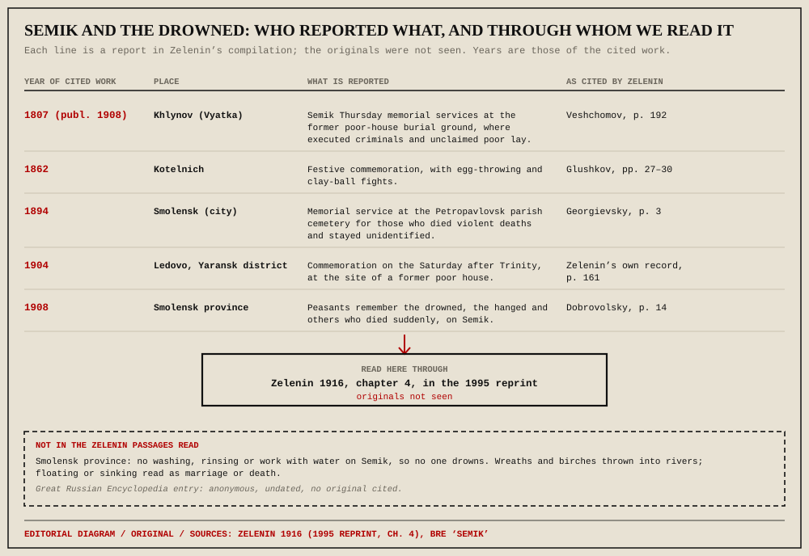
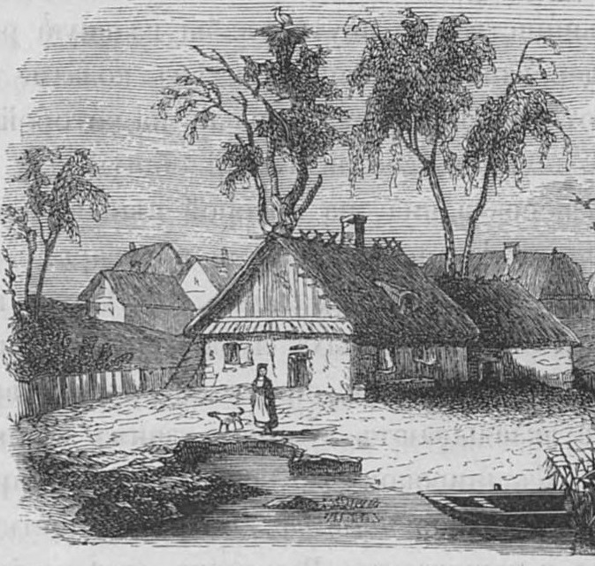
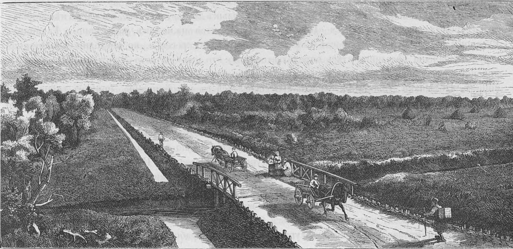

VOL. II · PLATE O · 03 / 06
WATER, MARSH AND RIVER
Where the drowned were remembered, and where the swamp stood between worlds
In the sources read for this plate, water is the place of the drowned, the swamp is a border, and the water’s owner keeps those who drown. A calendar day remembered those who died by water; an essay reads swamps as a threshold; two older writers report what was said of the water spirit. A lament and a song are printed beside them as texts, not as records of a rite. The plate keeps the dated custom and the interpretation apart.
Customs recorded 19th–20th centuries; handbooks 1903 and 1927; essay 2022; lament recorded 1867–1868; song 1883 · Vyatka, Smolensk and other provinces (Semik reports); Russia and neighbouring peoples (essay) · Eastern Slavic folk custom; comparative mythology
O / 01
A landscape in between
Olga Lavrenova’s essay reads swamps in the mythopoetic picture of the peoples of Russia as a border landscape. A swamp joins water and land without being either, and in many of her examples it is also a place where souls go and where the living are in danger. Swamp spirits drag people down or lure them into the mire, and the kikimora of some accounts is a girl who drowned in a swamp.
The essay is a humanities argument built on secondary collections and has no stated way of choosing its examples. It ranges across Slavic, Finno-Ugric, Tungus, Turkic and other peoples, so a single detail cannot be assumed to be Russian. It tells us what a swamp can mean in these traditions. It does not tell us what any family did when someone drowned.

O / 02
The drowned at Semik
The Great Russian Encyclopedia’s online entry on Semik, the Thursday of the seventh week after Easter, describes it as a time to remember people who died without repentance or a funeral: the drowned, the hanged, victims of violence and the unidentified. It also says that in Vyatka the day was given to the drowned and that cemetery feasts there turned boisterous; the Zelenin passages read for this plate do not confirm that, and tie Vyatka to poor-house sites instead (below). In Smolensk province people avoided washing, rinsing or any work with water on that day so that no one in the family would drown. Wreaths and birches were thrown into rivers, and in some readings whether a wreath floated or sank signalled marriage or death.
Zelenin gives Smolensk province an older record. Peasants there, he writes, remembered the drowned, the hanged and others who had died suddenly on Semik, and he cites Dobrovolsky (1908, p. 14). A second report he cites, by Georgievsky (1894, p. 3), describes a memorial service at the Petropavlovsk parish cemetery in the city of Smolensk for those who died violent deaths and remained unidentified. The ban on water work is not in the part of Zelenin read here; for that the plate has only the encyclopedia.
The entry is anonymous and undated, and it names its regions without quoting the original records. The plate takes them as reports to be checked, not as a finished survey.
O / 03
Pits for the unclaimed
The same entry says that unidentified and unclaimed bodies were once placed in open communal pits, skudelnitsy, and buried together at Semik. Commemoration took place at cemeteries and at the sites of these ‘poor houses’. It adds that Catherine II banned burial in them in 1771.
Zelenin’s Vyatka material is about these places. He cites Veshchomov (written in 1807, published 1908, p. 192) for memorial services on the Semik Thursday at the former poor-house burial ground in Khlynov, the city of Vyatka, where executed criminals and unclaimed poor had been buried. Glushkov (1862, pp. 27–30) describes a festive commemoration at Kotelnich, with egg-throwing and clay-ball fights. Zelenin’s own record of 1904 (p. 161) puts the commemoration at Ledovo, Yaransk district, on the Saturday after Trinity, at the site of a former poor house. These are reports in a compilation, each tied to a named place and, in the original, to a named collector; the originals were not seen here.
That is a record of an institution, a place and a date. It is useful here because it shows the calendar custom attached to a physical arrangement for the dead who had no family to bury them. It says nothing about rivers.
O / 04 · THE WATER SPIRIT
The water’s owner and what he did with the drowned
In his handbook of East Slavic ethnography, Dmitry Zelenin devotes § 159 to the vodyanoi. He writes that fishermen and millers knew him best, and sometimes offered him sacrifices; that he helped a fisherman and guarded a miller’s dam, but when angry tore nets, drove off fish and flooded hives; and that a person who bathed at noon or at night could be pulled into his kingdom. Rescuing a drowning person was dangerous, since the vodyanoi might drown the rescuer, now or later, for taking his victim. The drowned became his workers, and girls became rusalki and often his wives. By the idea common to all East Slavs, he adds, the vodyanoi were themselves once ‘pledged’ dead, that is drowned people (1991 edition, p. 416).
Maksimov’s 1903 book gives the same fear in practical form: bruises and scratches on a body taken from the water showed that the person had been in the spirit’s paws, and a wooden cup with three wax candles fixed to its rim, set on the water, would sink and stop over the place where the drowned lay (pp. 77–78, 83–84). Both writers are summarising many local reports, and neither names a village for these items, so they show a belief that scholars of the time considered widespread in northern and central Russia, and not its distribution. The one firm point where they overlap with the Semik material above is that the drowned were a category apart: dead by water, outside the churchyard’s ordinary care.
Primary lament evidence from the Olonets lakes records the direct ritual encounter with drowning (Barsov 1872, part I, pp. 252–264). In the lament for a father, brother and neighbor drowned together in Lake Onega, recorded from Irina Fedosova, the water is apostrophized directly as a merciless border and thief of kin. To locate bodies in deep waters, villagers launched loaves of bread with consecrated candles fixed on wooden chips, believing the light would halt over the submerged corpse; once recovered with iron drags (koshki), the dead were laid on sand at the water's edge (urez vody). Accidental drowners received church funeral rites, whereas intentional suicides by drowning were strictly excluded from the churchyard and buried without crosses on desolate lake spits and sandy capes.
O / 05
Water, source by source
| Source | Kind of evidence | What it can support |
|---|---|---|
| Encyclopedia entry on Semik | Regional reports of calendar custom | That some places remembered the drowned on a set day and avoided water on it |
| Lavrenova, 2022 | Interpretive essay, many peoples | That swamps can be read as a border and a route for the dead in these traditions |
| Zelenin, 1916 (chapter 4 on Semik, read in the 1995 reprint) | Compilation citing named local reports (Dobrovolsky, Veshchomov, Glushkov, Georgievsky) | That Semik commemoration of the drowned and the unidentified is recorded for Smolensk and, at poor-house sites, for Vyatka; and that the dead of ‘unnatural’ death were given a place in waters, bogs and thickets |
| Zelenin, 1927 (§ 159, 1991 translation, p. 416) | Handbook synthesis by one compiler; no villages named | That the water’s owner is described as taking those who bathe at the wrong time, keeping the drowned as workers, and that the opinion is reported that he was himself a drowned ‘pledged’ person; not the distribution of any belief |
| Maksimov, 1903 (read by keyword) | A collector’s book; no place or informant for these items | That bruises on a drowned body were read as the spirit’s grip and that a floating cup with candles was said to find the body; not where, or how widely |
| Barsov, 1872: lament for the drowned (excerpt) | One performer’s lament, Olonets province, recorded 1867–1868 | How one lament describes death without confession or burial after a drowning on Lake Onega; not a general practice |
| Sadovnikov, 1883: song | A literary song that became a folk song | That the river appears as a grave in a song; it is not a record of any funeral |



Text
Lament for the drowned (excerpt)
Плачъ о потопшихъ (отрывокъ)
Original
English translation
Excerpt Lines 175–192 of a lament of more than 220 lines. The excerpt stops before a dialect verb whose sense is uncertain.
The lament is spoken by a daughter who survived a storm on Lake Onega; her father and brother drowned. In this passage she describes what happens to those who die without confession and without burial: their bodies are not given to the earth, the wind wraps them, the sun warms them, snow falls on them, and the family has no grave to visit. The passage contrasts this death with the good death at home, on one's own bench, with priests and burial.
The text is No. XVII in Barsov's first volume and comes from Fedosova's repertoire. Barsov prints the full lament, which includes the storm, the survival and the search for the bodies. The atlas prints lines 175–192 only. The following line contains a dialect verb whose sense is uncertain, and the excerpt stops before it.
- смерётушка
- Death, in a diminutive form; the lament uses affectionate diminutives even for death.
- побѣдная головушка
- Poor wretch; a formula of self-pity, not a literal head.
- приданы
- Given over, consigned; here, to the earth.
- жирушка
- Household, dwelling, the peasant home with its stores.
- призавіе
- Printed form of a dialect verb; the sense is not certain. Translated tentatively as ‘will wrap’.
Source E. V. Barsov, Prichitaniya Severnogo kraia, vol. 1 (Moscow, 1872), pp. 252–259, no. XVII, lines 175–192. · open source
Rights Public domain. Barsov died in 1917; the volume was published in 1872. Public domain in Russia and in the United States. The transcription was checked line by line against the Internet Archive scan, pp. 258–259.
Song
From behind the island, into the reach
Из-за острова на стрежень
Original
English translation
Sadovnikov's poem was published in 1883 and became a folk song in the 1890s. It retells an episode from Kostomarov's study of Stenka Razin: the ataman throws his captive Persian princess into the Volga to stop his men's mockery. The last line is a command to sing ‘for the repose of her soul’ — a memorial formula used over a woman who has just been drowned.
The poem is literary, not a recorded song. It uses the river as a grave and the chorus as a memorial. It is relevant to the water plate and to the plates on the returning dead, but it is not evidence for a ritual. The ‘Persian princess’ is a literary figure; the poem gives no source for her.
- стрежень
- The deep, fast part of a river's channel.
- Стенька Разин
- Stepan Razin, the seventeenth-century Cossack leader of a major uprising; a figure of song and legend.
- за помин души
- For the repose of the soul; a memorial formula, here used over a drowned woman.
Source D. N. Sadovnikov, «Из-за острова на стрежень…» (1883). Text: Wikisource, based on Poety-demokraty 1870–1880-kh godov (1968). · open source
Rights Public domain. Sadovnikov died in 1883; the poem was published in 1883. Public domain in Russia and the United States. The folk-song version is a traditional reworking, not a modern arrangement.
Apparatus sources · related plates · terms
Sources for this plate
- bre-semik Bolshaya rossiiskaya entsiklopediya (online edition), unsigned entry — Семик (n.d.)
- lavrenova2022 Lavrenova, Olga — On the Borderline of the Worlds: Swamps in the Mythopoetic World Picture of the Peoples of Russia (2022)
- zelenin1916 Zelenin, Dmitry K. — Очерки русской мифологии. Вып. 1: Умершие неестественною смертью и русалки (1916)
- zelenin1927 Zelenin, Dmitry K. — Vostochnoslavianskaia etnografiia (Russian translation of Russische (Ostslavische) Volkskunde, Berlin–Leipzig 1927), transl. K. D. Tsivina (1991 (German original 1927))
- maksimov1903 Maksimov, S. V. — Nechistaia, nevedomaia i krestnaia sila (1903)
- barsov1872 Barsov, Elpidifor Vasil’evich — Prichitaniia Severnogo kraia (1872–1886)
- sadovnikov-volga Sadovnikov, Dmitry Nikolaevich — Iz-za ostrova na strezhen’… (1883)
URLs, access dates and limitations are in the bibliography.